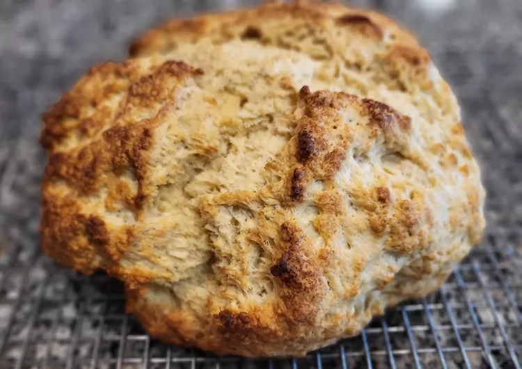

Amazingly Easy Irish Soda Bread

Description
Irish soda bread made with buttermilk and basic pantry ingredients. The buttermilk gives this crusty loaf a good flavor. It's the best Irish soda bread around!
Ingredients
- 4 cups all-purpose flour
- ½ cup margarine or butter, softened
- 4 tablespoons white sugar
- 1 tablespoon baking powder
- ½ teaspoon salt
- 1 cup buttermilk
- 1 large egg
- ¼ cup butter, melted
- ¼ cup buttermilk
Directions
- Cook and stir bacon in a heavy skillet over medium-high heat until bacon is browned and crisp, 3 to 4 minutes. Turn off the heat and transfer bacon into a large stew pot, reserving bacon fat in the skillet.
- Season beef chuck cubes generously with 1 teaspoon salt and black pepper to taste. Turn heat to high under the skillet and sear beef pieces in the hot fat on both sides until browned, about 5 minutes. Place beef in the stew pot with bacon, leaving fat in the skillet. Turn heat down to medium; cook and stir onions in the retained fat in the skillet until lightly browned, 5 to 8 minutes; season with a large pinch of salt.
- Cook garlic with onions until soft, about 1 minute. Pour beer into the skillet and stir with a wooden spoon, scraping up and dissolving any browned bits of food into the liquid. Pour cooking liquid from the skillet into the stew pot. Stir in tomato paste, carrots, celery, thyme sprigs, sugar, 1/2 teaspoon black pepper, and enough chicken broth to cover.
- Bring stew to a gentle simmer, stirring to combine; reduce heat to low and cover pot. Simmer stew until beef is fork-tender, about 2 hours. Stir stew occasionally and skim fat or foam if desired.
- Remove cover and raise heat to medium-high. Bring stew to a low boil and cook until stew has slightly thickened, 15 to 20 minutes. Remove and discard thyme sprigs and adjust salt and pepper to taste.
- Arrange mashed potatoes in a ring in a serving bowl; ladle stew into the center of the potatoes.